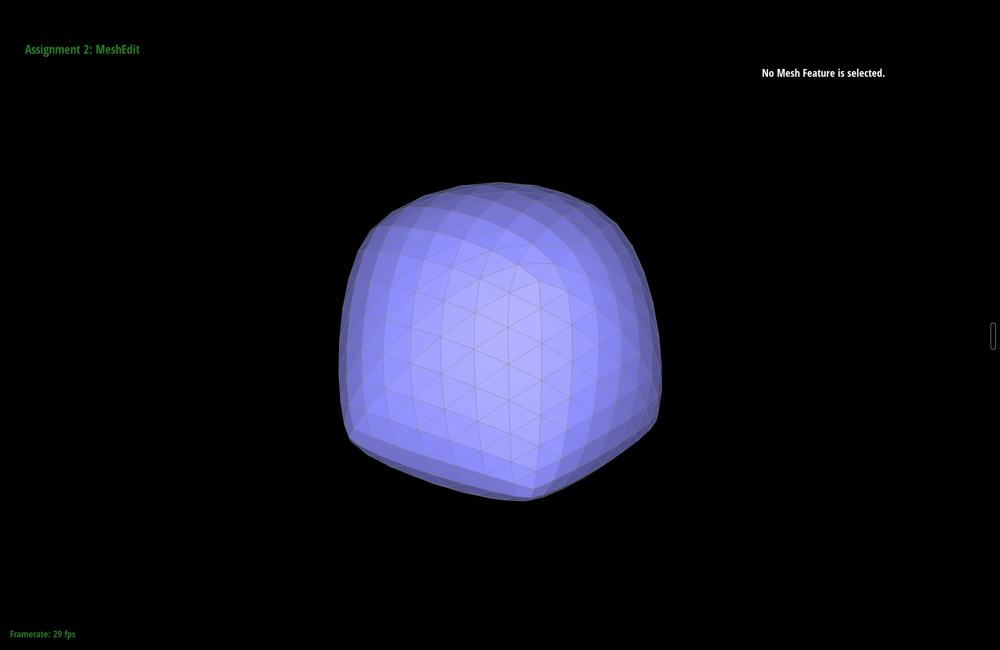

CS184/284A Homework 2 Write-Up
Link to webpage: https://cal-cs184-student.github.io/hw2-action-potential-writeup/
Link to GitHub repository: https://github.com/cal-cs184-student/hw2-action-potential

Overview
This homework was really two mini-projects stitched together. The first half is about Bezier curves and surfaces: given a handful of control points, how do you actually trace out the smooth shape they imply? The answer is de Casteljau's algorithm, which turns out to be nothing more than repeated linear interpolation applied until you run out of points. The second half drops down a level and has you editing meshes directly through the half-edge data structure — computing vertex normals, flipping and splitting edges, and finally chaining those operations together into Loop subdivision to smooth a mesh out.
The thread that connects both halves is that complicated geometry comes out of very simple
local rules applied over and over. The thing I took away most, though, was how much of the
mesh work is really just bookkeeping. The math for an edge flip fits on a napkin, but if you
get a single next() or twin() pointer wrong the whole mesh falls
apart the moment the renderer tries to walk it. Drawing the before/after diagrams by hand
and labeling every halfedge before touching the keyboard saved me a lot of pain.
Section I: Bezier Curves and Surfaces
Part 1: Bezier curves with 1D de Casteljau subdivision
de Casteljau's algorithm evaluates a Bezier curve at a parameter \(t\) by repeated linear interpolation. You start with the \(n\) control points and walk along each adjacent pair, placing a new point a fraction \(t\) of the way between them: \[ p_i' = \text{lerp}(p_i, p_{i+1}, t) = (1-t)\,p_i + t\,p_{i+1}. \] That gives you \(n-1\) points — one level down. Apply the same rule to those, and you get \(n-2\), and so on. After \(n-1\) levels you're left with a single point, and that point lies exactly on the curve. Sweeping \(t\) from 0 to 1 drags that final point along and traces out the whole curve.
My implementation does one level at a time. evaluateStep takes the current list
of points and returns the next level by looping over consecutive pairs and pushing
\((1-t)\,p_i + t\,p_{i+1}\) for each one into a fresh vector. The parameter \(t\) is a member
of the class, so I just read it directly. Because each call drops the count by one, the GUI
can call it repeatedly (the E key) to reveal the intermediate control polygons one
subdivision at a time.
Below is my own 6-control-point curve. Pressing E cycles through each level of the subdivision, from the original control polygon down to the single evaluated point, and C toggles the fully drawn curve.

|

|

|

|

|

|
Here is a slightly different curve, made by dragging the original control points around and scrolling to move \(t\) (which slides the evaluated point along the curve and moves all the intermediate points with it).

Part 2: Bezier surfaces with separable 1D de Casteljau
A Bezier surface is controlled by an \(n \times n\) grid of points and evaluated with two parameters, \(u\) and \(v\). The trick is that the 2D problem is separable: it's just the 1D algorithm run twice. First I treat each row of the grid as its own Bezier curve and evaluate all of them at the same \(u\), which collapses each row to a single point. That leaves me with \(n\) points, roughly running down a column. Those points define one more Bezier curve, and evaluating it at \(v\) gives the final point on the surface.
In code this is three functions. evaluateStep is the same single de Casteljau
step as Part 1, just in 3D and taking \(t\) as an argument. evaluate1D runs that
step in a loop until only one point is left and returns it — this is the full
curve-evaluation primitive. evaluate(u, v) ties it together: it calls
evaluate1D on each row of controlPoints at \(u\), collects the
resulting "moving" points into a column vector, then calls evaluate1D once more
on that column at \(v\). The mesh builder calls this across a grid of \((u, v)\) samples to
stitch the surface together.

Section II: Triangle Meshes and Half-Edge Data Structure
Part 3: Area-weighted vertex normals
A vertex doesn't have a normal of its own — it sits where several triangles meet, so I average the normals of those triangles. The nice detail is that I don't have to normalize the face normals first and then weight them by area manually. For a triangle with corners \(p_0, p_1, p_2\), the cross product \((p_1 - p_0) \times (p_2 - p_0)\) already points in the normal direction and has a magnitude equal to twice the triangle's area. So if I just sum those raw cross products over every triangle touching the vertex, the larger triangles automatically contribute more, which is exactly the area weighting we want. Normalizing the sum at the end throws away the constant factor of 2.
To visit each incident face I start at the vertex's halfedge and circulate with
h = h->twin()->next() until I come back to where I started, skipping any
boundary face. For each one I grab the three corner positions off h,
h->next(), and h->next()->next(), accumulate the cross
product, and finally return n.unit(). In the GUI, toggling Q switches
between flat per-face shading and this smooth per-vertex shading, and the difference is
obvious on curved surfaces like the teapot — the faceting disappears.

|

|
Part 4: Edge flip
An edge flip takes the two triangles sharing an edge and rotates the shared diagonal to the other pair of opposite corners. If the two triangles are \((v_0, v_1, v_2)\) and \((v_1, v_0, v_3)\) meeting along edge \(v_0 v_1\), after the flip the edge instead connects \(v_2\) and \(v_3\), giving triangles \((v_3, v_2, v_0)\) and \((v_2, v_3, v_1)\). No vertices, edges, or faces are created or destroyed — it's purely a rewiring of pointers, which is what lets me safely call it inside a loop later in Part 6.
My approach was to write everything down before writing any code. I labeled all six interior
halfedges (\(h_0\) through \(h_5\)), the four twins on the outside (\(h_6\) through \(h_9\)),
plus the four vertices, four outer edges, and two faces. Then I reassigned the whole local
neighborhood from scratch using setNeighbors, which sets the next/twin/vertex/
edge/face of a halfedge in one call. The outer twins and outer edges keep their values, so I
only had to rebuild the six interior halfedges. The last step is making sure every vertex and
face points at a halfedge that still belongs to it, since the old choices might now be stale.
Boundary edges can't be flipped, so I return early and leave the mesh untouched in that case.
The bug I hit was the classic one: I initially left a couple of the vertex halfedge()
pointers alone, assuming they were still fine. They weren't — one of them pointed into
the triangle in a way that no longer made sense, and the mesh looked right until I flipped a
second nearby edge and it tore. Explicitly reseating all four vertex pointers fixed it. Drawing
the labeled before/after picture is what made the correct assignments obvious.

|

|
Part 5: Edge split
An edge split inserts a new vertex \(m\) at the midpoint of an edge and subdivides the two triangles around it into four. Unlike the flip, this one genuinely adds geometry: starting from the edge \(v_0 v_1\) with opposite corners \(v_2\) and \(v_3\), I end up with one new vertex, three new edges (the one running to \(v_2\), the one running to \(v_3\), and the second half of the original edge), two new faces, and six new halfedges. The four resulting triangles are \((v_0, m, v_2)\), \((m, v_1, v_2)\), \((v_1, m, v_3)\), and \((m, v_0, v_3)\).
Same strategy as the flip: label the whole neighborhood first, then allocate the new
elements and wire everything with setNeighbors. I reused the two original
halfedges along the split edge (as \(v_0 \to m\) and \(v_1 \to m\)) and created the other
six fresh, which kept the allocation count honest and made it easier to reason about. One
detail the spec calls out is that the new vertex's halfedge should run along the edge
that was split rather than along one of the brand-new cross edges, so I point
m->halfedge() at the halfedge sitting on the original edge. I also set the
isNew flags here: the two edges lying along the original split line are not new,
while the two that cut across the old triangles are. That flag is what Part 6 keys off of.
For debugging I leaned on the CHECK_CLOSED, CHECK_FACE, and
CHECK_VERTEX assertions from the spec to confirm each new face was a proper
closed loop and each vertex pointed back at the right halfedges before trusting the result in
the GUI. My one mistake was an edge whose halfedge() I forgot to set, which only
showed up later as a crash during Loop subdivision rather than at the split itself.
Extra credit — boundary edge splits. I also handle splitting a boundary edge.
Only one side of a boundary edge is a real triangle; the other side is the virtual boundary
face. So instead of producing four triangles I split the single real triangle into two and
splice the new midpoint into the boundary loop. Concretely, I reorient so my interior
halfedge sits on the real face, split that triangle into \((v_0, m, v_2)\) and
\((m, v_1, v_2)\), then replace the one boundary halfedge \(v_1 \to v_0\) with two boundary
halfedges \(v_1 \to m\) and \(m \to v_0\), relinking the loop as
... → (v1→m) → (m→v0) → .... I keep the boundary
vertices (including the new \(m\)) pointing at a boundary halfedge, per the class convention.
This is what lets edge splits — and therefore Loop subdivision — work on meshes
with holes.

|

|

|

|
(This is verified in the app on the included open meshes
dae/open_band.dae and dae/open_sheet.dae: selecting a rim edge and
pressing S splits the single boundary triangle into two while keeping the boundary
loop intact.)
Part 6: Loop subdivision for mesh upsampling
Loop subdivision smooths a mesh by splitting every triangle into four and then nudging all the vertices toward a weighted average of their neighbors. I implemented it as the five-step pipeline the comments suggest, and the key realization is that it's built entirely out of the edge split and edge flip from the previous two parts — no new topology code needed.
-
For every original vertex I compute its smoothed position
\((1 - n u)\,\text{position} + u \sum \text{neighbors}\), where \(n\) is the degree
and \(u = \frac{3}{16}\) when \(n = 3\), otherwise \(u = \frac{3}{8n}\). I stash this
in
newPositionand mark the vertex as not new. -
For every original edge I compute where its midpoint vertex should land using the
\(\frac{3}{8}(A + B) + \frac{1}{8}(C + D)\) rule, with \(A, B\) the endpoints and
\(C, D\) the two opposite corners, and store it in the edge's
newPosition. -
I split every original edge. The subtlety is only iterating over the original
edges — since
splitEdgeappends its new edges to the end of the list, I grab the edge count up front and walk exactly that many, so I never split an edge I just created. Each new midpoint vertex inherits the position I computed in step 2 and gets marked as new. -
I flip every new edge that connects one old vertex to one new vertex. After splitting,
the cross edges point from a midpoint to an old corner; flipping them is what actually
reconnects the midpoints to each other and produces the clean 4-to-1 subdivision. The
isNewflags set back in Part 5 are what let me tell these edges apart from the ones lying along the original edges (which should stay put). -
Finally I copy every
newPositionintoposition, committing the move all at once so that no vertex's update accidentally uses an already-updated neighbor.
A few observations from playing with it. Sharp corners and edges get rounded off and lose their crispness as you subdivide — the cube is the clearest case, melting toward a rounded blob because the smoothing rule has no notion that an edge was supposed to stay sharp. You can reduce this by pre-splitting edges near the feature before subdividing, which raises the local vertex density so the limit surface stays closer to the original crease. On the cube specifically, the asymmetry of its triangulation makes subdivision look lopsided at first, because the two triangles on each face aren't symmetric; pre-flipping and pre-splitting to symmetrize the mesh before subdividing makes the result converge to a symmetric rounded cube.

|

|

|

|
To show the effect of pre-processing: the cube below is subdivided directly on the left, and on the right after first splitting/flipping edges to symmetrize it. The right-hand result is noticeably more symmetric.
|
 |

|
Extra credit: Loop subdivision on meshes with boundary
Building on the boundary edge split from Part 5, I extended Loop subdivision to meshes with holes. Two things change. First, the edge midpoint rule: a boundary edge has no pair of opposite vertices, so its midpoint is simply \(\tfrac{1}{2}(A + B)\) rather than the \(\tfrac{3}{8}/\tfrac{1}{8}\) stencil. Second, the old-vertex update: a boundary vertex is smoothed as if it lived on a cubic B-spline curve, using only its two boundary neighbors, \(\tfrac{3}{4}\,v + \tfrac{1}{8}(\text{neighbor}_1 + \text{neighbor}_2)\). I detect these two neighbors by circulating the vertex and keeping the halfedges whose edge is on the boundary. Interior vertices and edges are unaffected, so closed meshes subdivide exactly as before. The effect is that holes keep clean, smooth rims instead of collapsing or tearing.
(Verified in the app on dae/open_band.dae and
dae/open_sheet.dae: pressing L subdivides the open mesh without tearing,
and the boundary stays a clean curve rather than collapsing.)
Extra credit: Butterfly (interpolating) subdivision
I implemented a second scheme, Butterfly subdivision, which I invoke with the B key (Loop is still L). The topology step is identical to Loop — split every edge, flip the new old↔new edges — so it reuses all the same machinery. The difference is in the geometry. Butterfly is interpolating rather than approximating: the original vertices never move, and each new edge vertex is placed with an 8-point stencil, \[ p = \tfrac{1}{2}(a + b) + \tfrac{1}{8}(c + d) - \tfrac{1}{16}(e + f + g + h), \] where \(a, b\) are the edge endpoints, \(c, d\) the two opposite wing vertices, and \(e, f, g, h\) the four outer wings reached by hopping across the neighboring triangles. Where the full stencil isn't available (near a boundary), I fall back to the plain edge midpoint. Because old vertices are fixed, Butterfly keeps the mesh passing exactly through the original control points, which gives a tighter, less shrinking result than Loop — though it can look slightly less smooth at irregular vertices, since I use the regular-case weights everywhere.

|

|